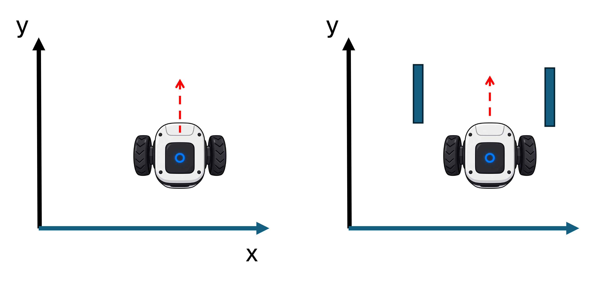
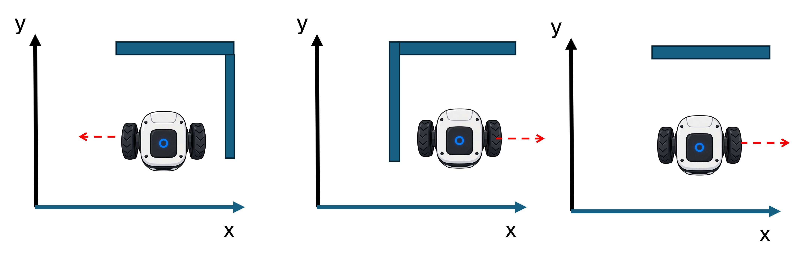
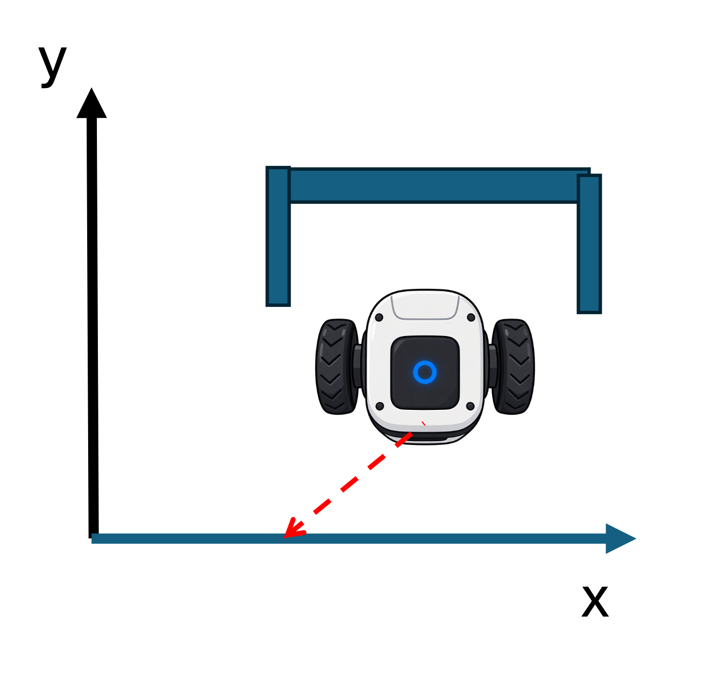

Lab: Robot Collision Avoidance
📝 Worth: 1 %
📥 Submission - By the end of class: upload your .py files on Gradescope
📝 General Instructions:
Download the starter code here
⚠️ EXTRACT THE ZIPPED FOLDER: 💀💀 working in a zipped folder is BAD!💀💀
✅ Collaboration is encouraged, submit your own independant work
🎯 Learning Objectives
In this lab you will program a robot to drive out of a room full of obstacles without hitting any of them. The robot has three radar sensors (front, left, right) and you decide how it moves based on what they read.
By the end of the lab you should be able to:
- Read sensor values and use them in
if / elif / elsedecisions - Use a
whileloop to repeat steps until a condition is no longer true, andbreakto leave it early - Trace how a program’s loop updates position step by step
- Build a simple decision algorithm step by step and test it on different random layouts
📝 Specific Instructions
Ensure that these three files are in the same folder:
| File | What it is | Do you edit it? |
|---|---|---|
collision_avoidance.py |
Your main program | Yes |
collision_helper.py |
Radar, obstacles and collision checks | No |
robot_shape.gif |
The robot picture | No |
Run the program with python collision_avoidance.py. A window opens with brown obstacles and the robot in the centre. The terminal prints the three radar readings at every step.
How the starter code works
Right now main() reads the radars once, calls move() once and checks for a collision once. The robot makes a step up by 1 pixel and stops moving on the screen.
When you finish, main() should repeat these steps until the robot leaves the screen or crashes:
- Read the three radars with
read_radar(robot, obstacles, direction). - Call
move(x, y, front_radar, left_radar, right_radar)to get the next position. - Move the robot there with
robot.goto(x, y). - Stop if
collision_detected(robot, obstacles)isTrue.
What the radar tells you:
Each reading is the distance (in pixels) to the nearest obstacle in that direction.
If nothing is in that direction, the reading is
1000(RADAR_INFINITY).“forward” always means up the screen \(+y\):

“left” means \(−x\) and “right” means \(+x\) and.The robot never turns; it only slides:

The starter move() always moves the robot up one pixel, whatever the radars say. You will fix that in Part B.
Your tasks
Work through these in order. Only edit collision_avoidance.py.
Part A: finish main()
TODO 1: Repeat until condition
Repeat the following steps while the robot’s position meets this condition \(X_{MIN} < x < X_{MAX}\) and \(Y_{MIN} < y < Y_{MAX}\)
- reading radars
- invoking
move() - moving the robot with
robot.goto() - checking for collisions
TODO 2: Stop on crash
Inside the collision if, interrupt the loop.
RESULT:
The robot drives straight up, collides into an obstacle and prints “Collision detected”!
Part B: improve move()
TODO 1: No obstacle in front
The robot goes forward (+1 along y, no change along x)
TODO 2: Obstacle in front
The robot should check its left/right radars and move sideways and away from the obstacle (take a step +1 or -1 along the x and not move along y)
- It should prioritize a movement right in case there are no obstacles to either sides.
Here’s a representation of three possibilities to go left/right:
TODO 3: Obstacles in front and on the sides (“Boxed in”)
The robot should take a step back (-1 along y) and while turning left ( -1 along x):
Here’s a representation of what happens if the robot is “boxed in”:

RESULT:
The robot should now be avoiding obstacles and reaches the edge of the screen successfully!
Demo
You will demo your program in class. Before your demo, check:
During the demo, be ready to:
- Run your program at least once and explain what the robot does